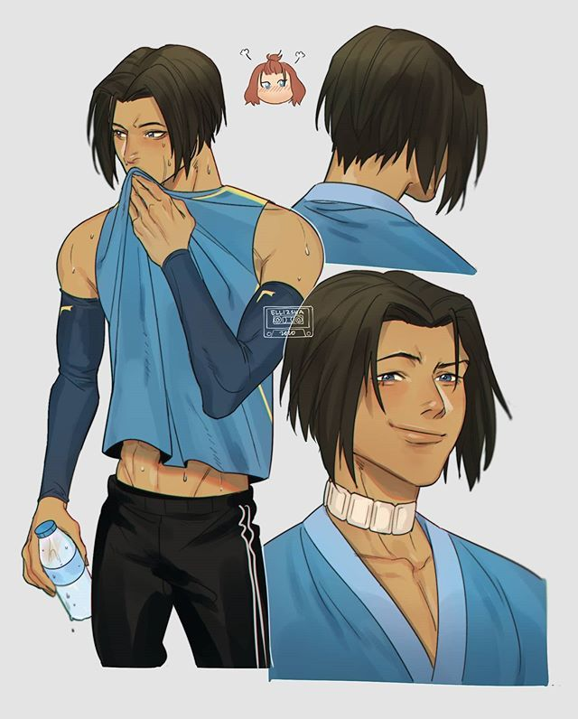

About Sokka
Sokka is sexier with his hair down and is the ultimate daddy of the show.
Sokka looking real sexy again
Sokka's Characteristics
- He's got a cool boomerang
- He's an underrated badass
- He don't need to be a bender
Sokka's Friends
Sokka has pretty awesome friends too (the gang). Click on links below to learn more.